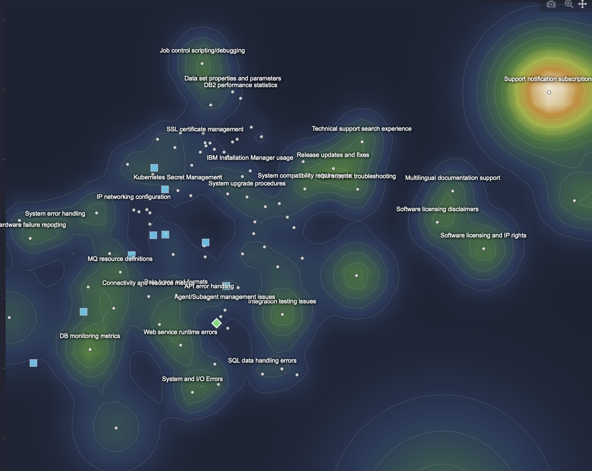
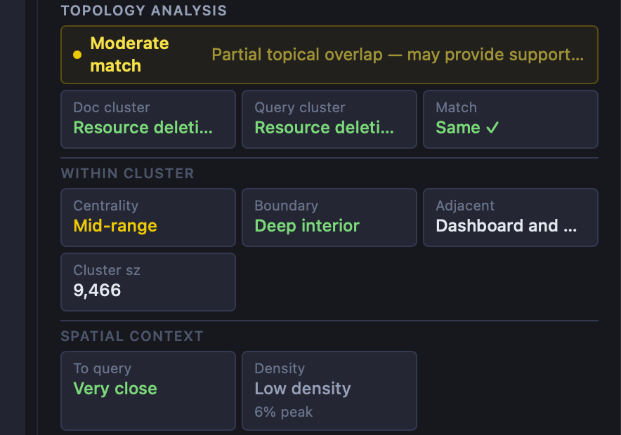
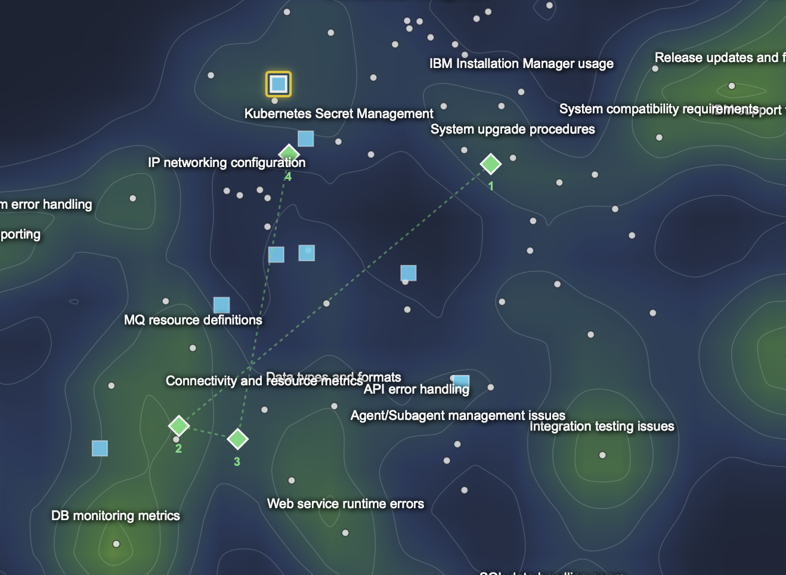

Visual
RAG
Retrieval-Augmented Generation as a navigable space. A million documents collapse into a terrain — queries land on it, answers grow from it, and every step of reasoning leaves a visible trace.
The full pipeline, streamed
Each stage emits a server-sent event. The map doesn't wait — the query position appears before the search resolves, documents land as results arrive, and the generated answer plots itself once streaming ends. Nothing is buffered until it's complete.
A corpus as terrain
100 semantic clusters from Faiss K-means over 1M documents are rendered as a continuous topographic surface using a centroid-weighted Mixture of Gaussians — not a point-cloud KDE. Density peaks align exactly with cluster centers; the colorscale reads like elevation. Retrieved documents scatter on it, sized and colored by cosine similarity.
New query points are placed via nearest-centroid approximation rather than running UMAP at query time — deterministic, sub-millisecond, no async process conflicts.

What the map says about a document
Select any retrieved document and four metrics — computed in-browser from 2D cluster geometry — surface structural signals about why it was retrieved and how much to trust it.

Pick a source, watch the answer move
Click any document on the map and regenerate. The LLM reruns on that source alone — bypassing the vector search entirely. Each answer is re-embedded after streaming and plotted as a green diamond. Multiple answers per session connect as a dashed path: the LLM's semantic drift made visible.

Every session, restorable
Queries, retrieved documents, and all generated answers persist to localStorage. Restoring a past session reloads the full map state — answer markers, document positions, selected answer — exactly as left.